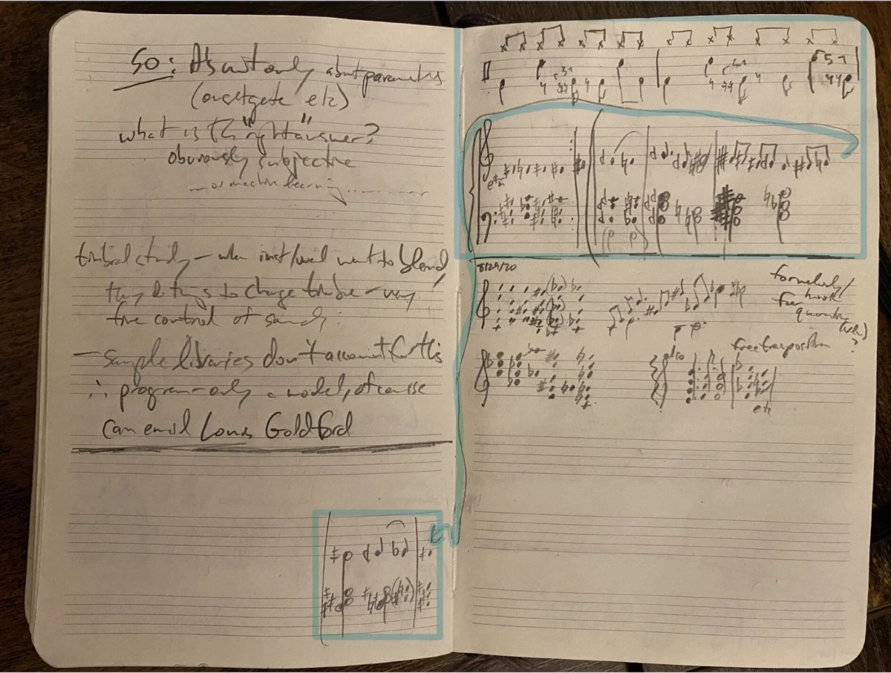

Fardels Bear
2020 · electric guitars, electric bass, quarter-tone-offset keyboards, drum machine
This track was a gift to myself, recorded in one day on my birthday in 2020.
I jotted down a 24-EDO chord progression, practiced a little playing two keyboards (offset by a quarter tone), detuned one guitar and an electric bass string, played a beat on a midi drum pad, and hit record.
The recording features:
- two electric guitars tuned a quarter step off from each other,
- one electric bass, with its E string off a quarter tone
- two “pianos” offset by 50 cents, piped in from a Max patch I whipped up (routed through Soundflower into Cubase), controlled live by two midi keyboards, which I played together, alternating chords between them.
- Groove Agent, Cubase’s native drum machine
Influenced by Dilla, Questlove, and Hiatus Kaiyote, and fascinated by groove, I wanted to push the limits of what could function as the “right” kind of “wrong” in the rhythmic realm.
Guitars had to be tracked separately. After this, I sprinkled in some granular microtonal piano (which sounds a bit like an organ), and ran everything through a lot of automation, EQ, etc, rounded out with a healthy (at least) dose of iZotope Vinyl.
Though I have performed and recorded in rock bands, I had never previously written and recorded an entire track myself. Given this, and that I am new to creating Hip Hop, the piece could rightly be seen as a first effort. Under the guidance of Professor Wendel Patrick, I hope and trust my works in this vein will exhibit rapid growth.
